Onboarding
a 2021 welcome kit
Presented by Iraguha Jean-Paul
Vision
- Go faster
- Safer
- stronger
- @low cost
- With an emphasis on the customer
But wait
Is it so easy?
What are the drawbacks?
Software development is hard
- Software Entropy or Software erosion
- Fragility
- Industry is moving really fast
Culture
DevOps
“Organizational and cultural movement that aims to increase value delivery velocity, improve service reliability, and build shared ownership among stakeholders"
Continuous transformation
- Systematic, scientific pattern of working
- Team experimentation
Objective
Scope
- What
- How
- When
- Who
- After - vision
Ability to evaluate implementation complexity
Target
- Be self driven in the company
- Dare to bring changes
- Avoid single point of failure
First week
Mobile
- White paper challenge
- Own the doc & Knowledge
Backend
- Scaffold
- Service architecture
- Own the doc & Knowledge
Workshop 1
Tools
Authy
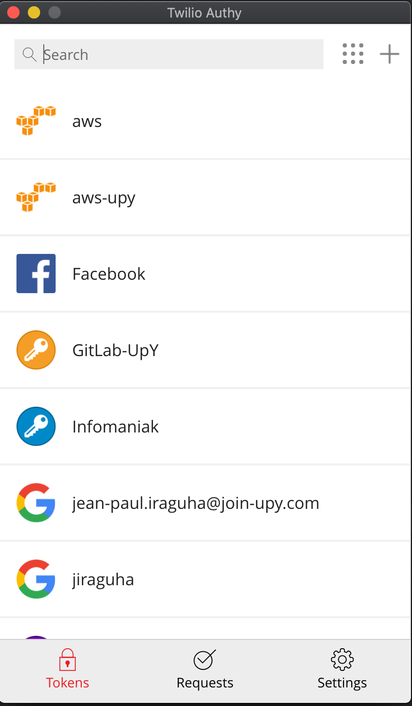
Gmail
Make sure to have multi-factor auth, for the sake of securitySlack
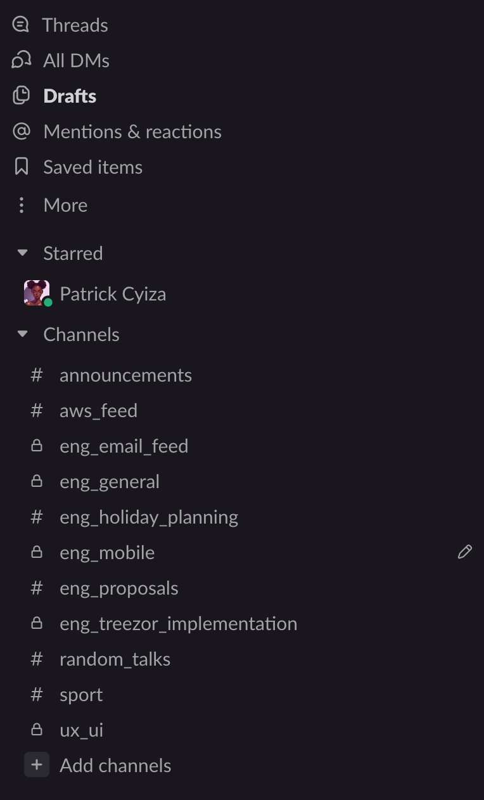
oh my zsh
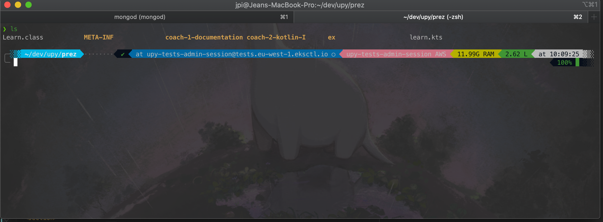
Gitlab
- Social login with Gmail
- Group - Structure
- Day to day work
Markdown
- Bear
- Notion
- Read
Notion
IDE
- Intellij + VS code
- Code Style
Workshop 2
Day to day
Organization
- Planing
- Sprint, from 1 to 2 weeks
- Refinements
Daily Meeting
- What you did
- Problem encountered
- Objective - "Personal" commitment - @ day level
- Objective - Team commitment - @ planning level
We are against micromanagement - Team performance is the result of many factors... Some of them like team cohesion are hard to measure. Instead, we give you the freedom to be your own challenger
Workshop 3
Learning
Workshop & Coaching
1 presentation every sprint made by any team memberOnline course & certification
Just askContribute to open source
Meetup
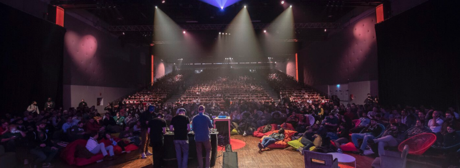
See on Notion
Workshop 4
Documentation
Documentation is like
Tell what you see?
### Personal Vs Shared understanding
> If you tell me that you understand every documentations I have made... I reasonably will
not believe you!
2 possibles actions:
- Show me
- Let me explain it in my words
Creating a documentation is Like
Take a picture
"Of a shared experience"
- by build a common room like inside joke
- by establishing best practices & guidelines
The question to ask > How the doc will help me to share my thoughts and improve the collaboration?
Use existing picture
Existing and commonly accepted practices or frameworks
- like UML
- like specific language
- Code style
- ...
Workshop 5
Developer experience
Is it about the feelings? not really.
Great developer experience (DX) is 100% about developer productivity and can be measured in terms of value and time.
Respect developer knowledge and goals
Value
- Start for something I know
- What I know should be inline with my goal.
Do the simplest thing that could possibly work
Time management
- The Feature Snowball
- It is all about the momentum
- Bringing value quickly or immediately
- Reducing the noice ratio between value and time
Learning should be incremental
Value
- I should go to value incrementally.
- 75% of the performance are in the 30 first % of effort
- I should learn enough to correct myself
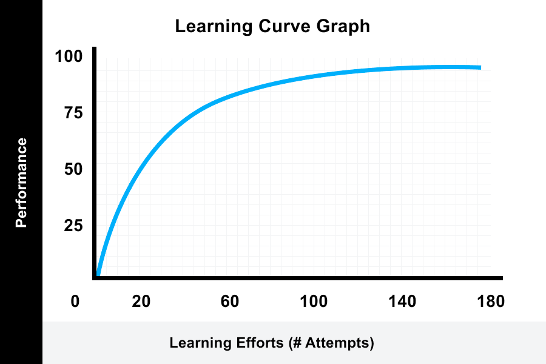
Wasted time is wasted time
Time management
- Can I fail fast?
- Gathering feedback really fast?
- did it take longer than it should have?
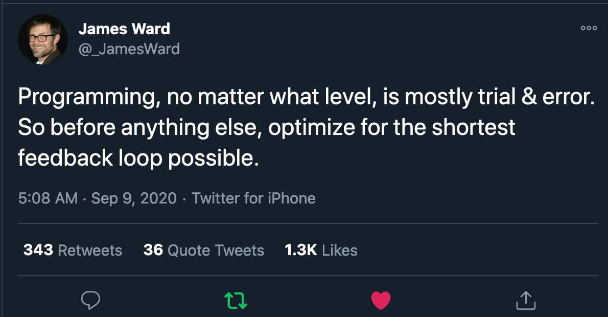
Workshop 6
Advice
Find a vision & compare you to your better selfThese Are Arnold Schwarzenegger’s 5 Rules for Success | Motivational Speech - YouTube
Work your ass off, Stay strong and focus
Surround yourself by ally or mentor & Avoid negative peopleJack Ma’s Ultimate Advice for Students & Young People - HOW TO SUCCEED IN LIFE - YouTube
- Meetup
Information and knowledge is the power
Do not hesitate to invest in yourself
Fight your impostor syndrome, It is ok to not know
Here is an advice that « Kelsey Hightower » gave at Hishcorp interview. a great techi how has An Unconventional Path to IT.You are going to be your toughest critic. You're going to always compare yourself to other people. You're always going to believe that you don't have permission to do a thing until you yourself are the expert. But by that time, it's way too late. (I really got comfortable with learning in public. Just taking that away and just saying that's not going to be a barrier for using my voice, attempting to learn something new or even asking for help. And I would say this, that even later in my career, ) most of my success comes from being able to learn in public. (And that really means a lot, if you understand what that means.) Going to work and saying, "Look, I don't know." Ask a question, and that might save you weeks or days. And if you're saving weeks or days, you can take that time and put it into something (else, versus pretending or trying to avoid impostor syndrome.)
The platform
EKS

- AWS manage our control plane - SLA
- Good VPC isolation
- Good interoperability AWS services like fargate
Autoscaler!
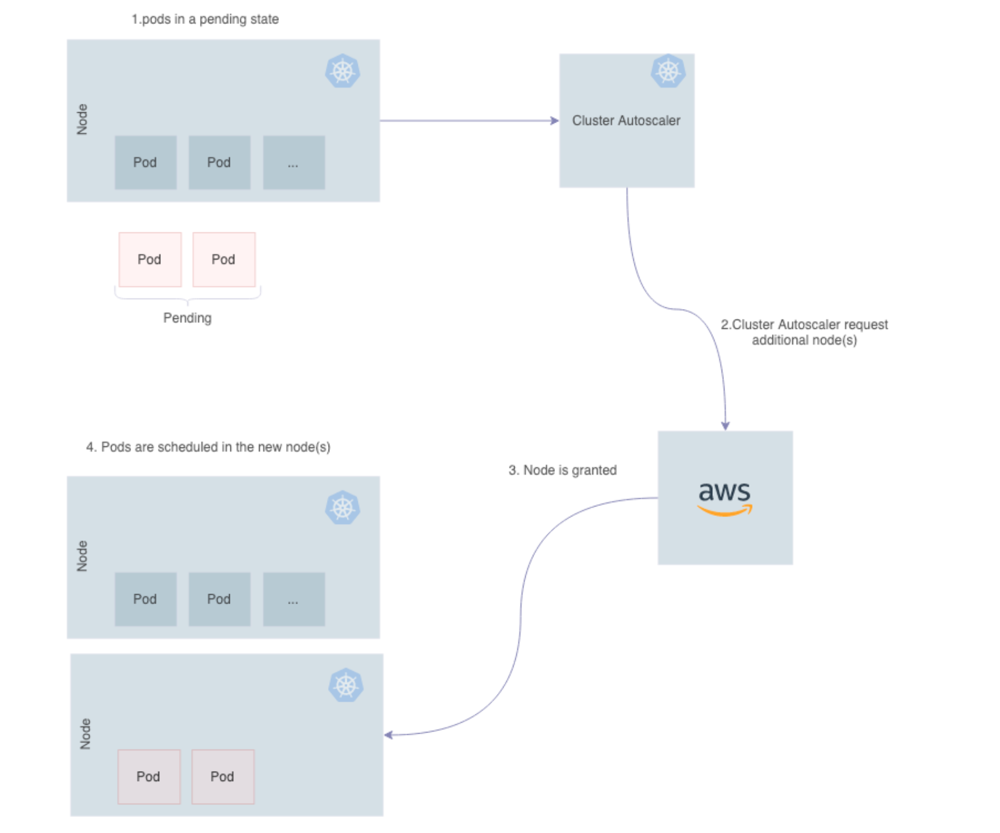
Stack
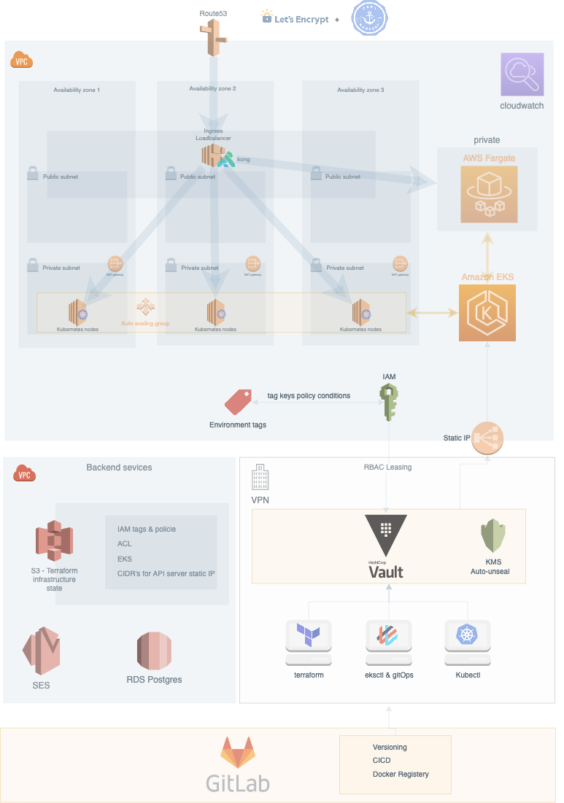Cluster with IaC
- Tests
- Ops
- Dev
- Prod
Argo
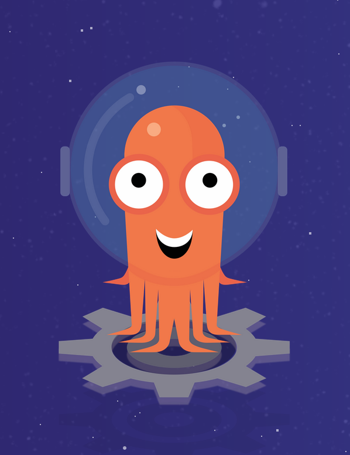
- CD
- Workflow
- Events
Disaster Recovery with Verelo
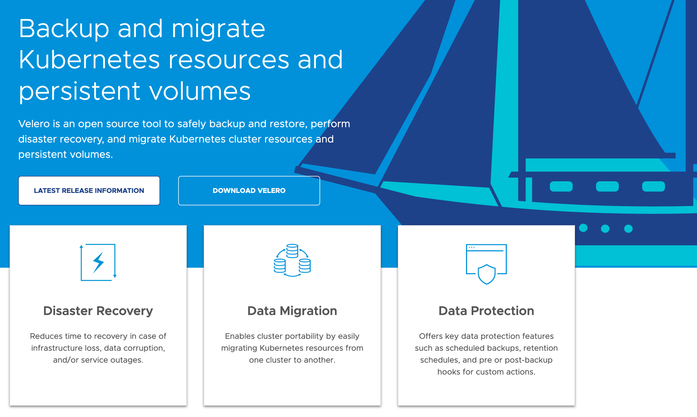
Observability
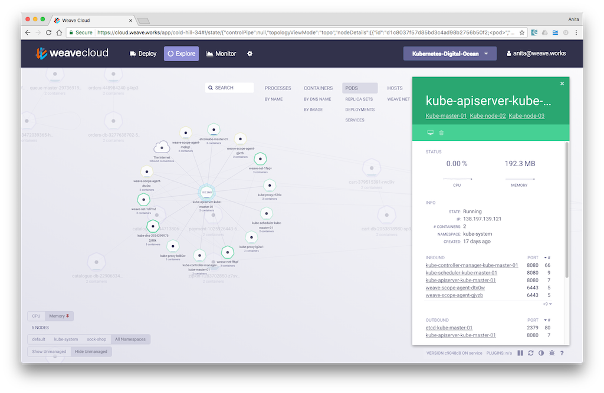
Environment segregation
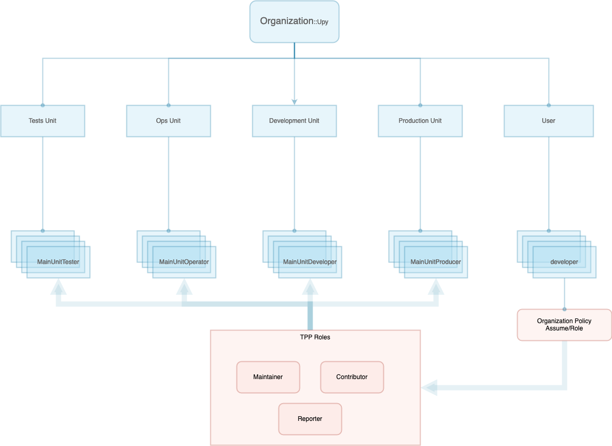
- User - Dev
- Tests
- Ops
- Dev
- Prod
CLI
One CLI to ruls them all
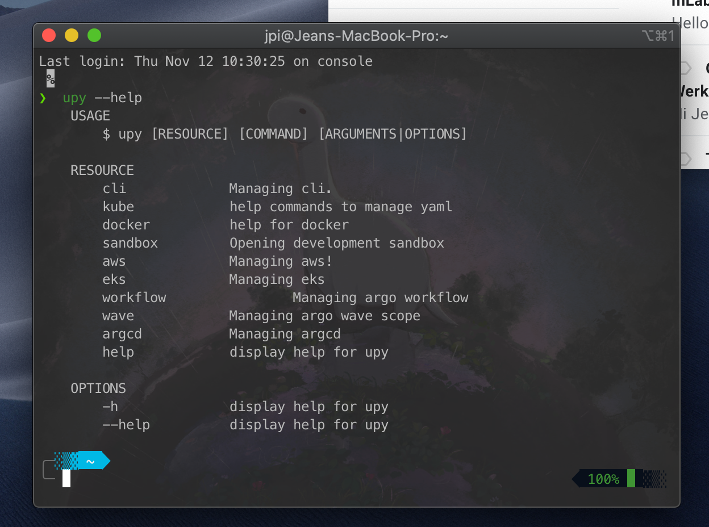